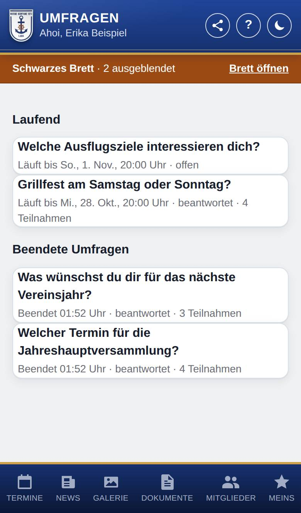

Umfragen
Nur, wenn Umfragen eingeschaltet ist.
Mit Umfragen fragt die Marinekompanie Lank alle Mitglied nach ihrer Meinung, z. B. „Grillfest am Samstag oder Sonntag?“. Diese Seite listet alle Umfragen: die laufenden und die beendeten.

So öffnest du die Seite
Öffne das Schwarzes Brett (im Banner oben auf Brett öffnen tippen) und tippe unter Laufende Umfragen auf Beendete Umfragen. Aus einer geöffneten Umfrage kommst du mit Alle Umfragen hierher.
Was du hier siehst
- Laufend: alle Umfragen, auf die du noch antworten kannst. Gibt es keine, steht dort Zurzeit läuft keine Umfrage.
- Beendete Umfragen: alle Umfragen, die zu Ende sind.
- Bei jeder Umfrage: die Frage, Läuft bis … (bzw. Läuft, bis sie beendet wird) oder Beendet …, dazu offen, beantwortet oder nicht teilgenommen. Darfst du die Ergebnisse schon sehen, steht dort auch die Zahl der Teilnahmen.
- Umfragen verwalten: nur, wenn du Umfragen verwalten darfst.
So gehst du vor
Eine Umfrage öffnen
- Tippe auf die Umfrage.
- Es öffnet sich die Seite der Umfrage. Dort antwortest du oder siehst deine Antwort und die Ergebnisse (siehe Umfrage beantworten).
Gut zu wissen
- Jede Umfrage hat genau eine Frage: mit einer Antwort, mit mehreren Antworten oder mit freiem Text.
- Laufende Umfragen stehen auch am Schwarzes Brett. Solange du noch nicht geantwortet hast, erscheint eine Umfrage außerdem im Banner oben auf jeder Seite, mit dem Knopf Teilnehmen.
- Bei einer neuen Umfrage und 24 Stunden vor ihrem Ende (nur, wenn du noch nicht geantwortet hast) bekommst du eine Benachrichtigung, wenn du die Art Umfragen: neue Umfrage und Erinnerung für dein Gerät eingeschaltet hast. Ein Tipp darauf öffnet die Umfrage.
- An Umfragen nehmen nur Mitglied teil, nicht z. B. Anwärter.